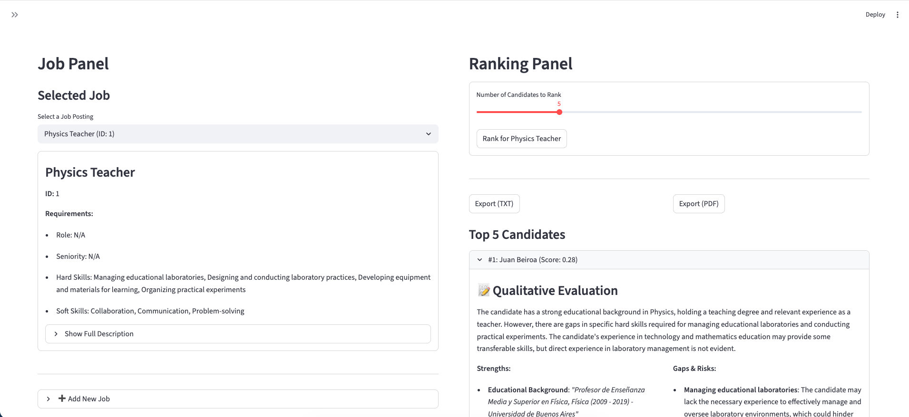
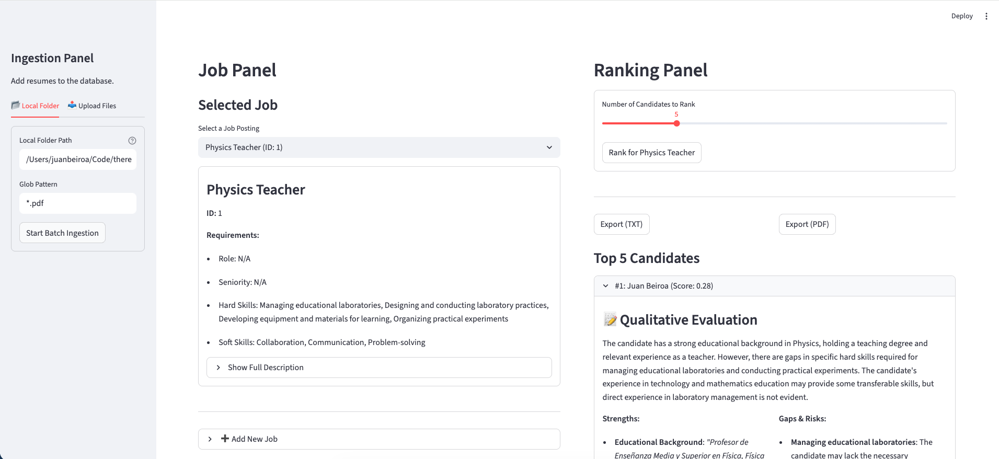
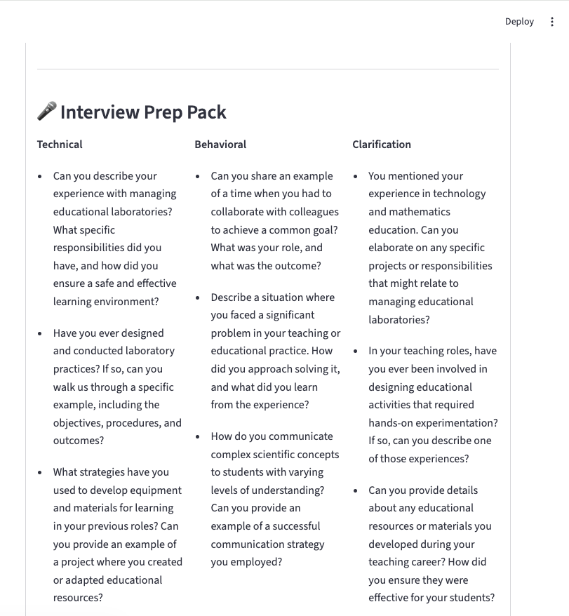

thereisnohr
Sistema de Seguimiento de Candidatos flexible e independiente del proveedor
Resumen
A finales de 2024, me confiaron el proceso de selección de un docente de Matemáticas y Biología en una escuela donde trabajaba. Supuse que RR.HH. se encargaría de la recepción y filtrado de CVs, pero no fue así: no existía un departamento de RR.HH. para esa tarea.
Así nació thereisnohr, un pequeño y flexible Sistema de Seguimiento de Candidatos (ATS) independiente del proveedor. Proporciona un pipeline completo para el procesamiento de CVs, desde la ingesta de PDFs hasta el emparejamiento con IA y la preparación de entrevistas.
El sistema utiliza múltiples proveedores de LLM (Ollama, OpenAI) para permitir el parseo inteligente de CVs, puntuación de candidatos y generación automática de preguntas. Construido con un enfoque en la modularidad y extensibilidad.
Características Clave
- Ingesta Multi-Fuente: Agregado de CVs mediante procesamiento por lotes de carpetas locales o cargas directas de PDF vía web.
- Parseo Inteligente: Extracción de Markdown desde PDFs con detección automática de secciones y soporte bilingüe (inglés/español).
- Resolución de Identidad: Identificación de candidatos mediante métodos deterministas y apoyados en LLM para prevenir duplicados.
- Extracción de Señales Estructuradas: Derivación de habilidades, experiencia y educación a partir de CVs y descripciones de puestos usando LLMs.
- Recuperación Híbrida y Ranking: Embudo de múltiples etapas que combina búsqueda vectorial (pgvector), coincidencia determinista y re-ranking con LLM.
- Explicaciones Basadas en Evidencia: Justificaciones de emparejamiento transparentes basadas en citas del CV, con análisis explícito de brechas y riesgos.
- Preparación Automatizada de Entrevistas: Generación de preguntas técnicas y conductuales adaptadas a la compatibilidad entre el candidato y el puesto.
- API Asíncrona: Backend en FastAPI con cola de tareas respaldada por base de datos para procesos largos de procesamiento y LLM.
Tecnologías
Galería


